QUESTIONS AND ANSWERS ON SOME FOLK BELIEFS AND HOME REMEDIES
These examples are from the mountains of Mexico, the area that I know best.
Perhaps some of the beliefs of your people are similar. Think about ways to learn which beliefs in your area lead to better health and which do not.
When people think someone is bewitched, is it true that he will get well
FALSE! No one is ever if his relatives harm or kill helped by harming the witch?
someone else.
Is it true that when the 'soft
This is often true. The 'soft spot’ on top of a baby’s spot’ sinks because the head sinks inward this baby has lost too much means the baby will die liquid (see p. 151). Unless of diarrhea unless he gets he gets more liquid soon, he special treatment?
may die (see p. 152).
This is not true! But children
Is it true that if the light may be born mentally slow, of the eclipsing moon deaf, or deformed if the falls on a pregnant mother does not use iodized mother, her child will salt, if she takes certain be born deformed or medicines, or for other mentally slow?
reasons (see p. 318).
It is true that soft light is easier on the eyes of
Is it true that mothers both the mother and the should give birth in a newborn child. But there darkened room?
should be enough light for the midwife to see what she is doing.
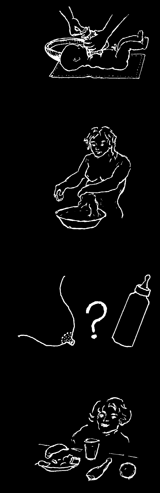
Is it true that a newborn
True! The stump of the baby should not be cord should be kept bathed until the cord dry until it falls off. But falls off?
the baby can be gently cleaned with a clean, soft, damp cloth.
How many days after giving
A mother should wash with birth should a mother wait warm water the day after before she bathes?
giving birth. The custom of not bathing for weeks following childbirth can lead to infections.
Is it true that traditional breastfeeding is better than 'modern’ bottle
TRUE! Breast milk is feeding?
better food and also helps protect the baby against infection.
In the weeks following
What foods should women childbirth, women should avoid in the first few weeks not avoid any nutritious after childbirth?
foods. Instead, they should eat plenty of fruit, vegetables, meat, milk, eggs, whole grains, and beans (see p. 276).

Is it a good idea to
It is a good idea. Sick bathe a sick person, people should be bathed or will it do him harm?
in warm water every day.
NO! All fruits and juices
Is it true that are helpful when one oranges, guavas, has a cold or fever. They and other fruits are do not cause congestion harmful when one or harm of any kind.
has a cold or a fever?
NO! When a person has
Is it true that when a high fever, take off all a person has a covers and clothing. Let high fever, he the air reach his body.
should be wrapped
This will help the fever go up so that the air down (see p. 76).
will not harm him?
Is it true that tea made
True. It helps. Willow from willow bark will bark has a natural help bring fever down medicine in it very and stop pain?
much like aspirin.
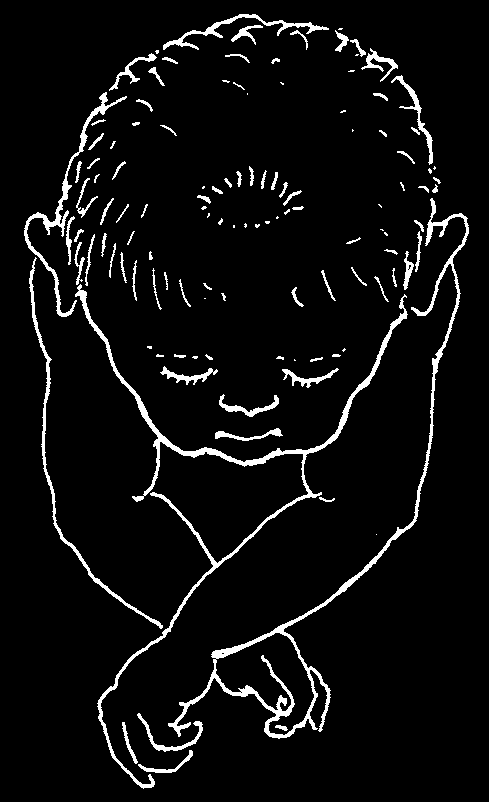
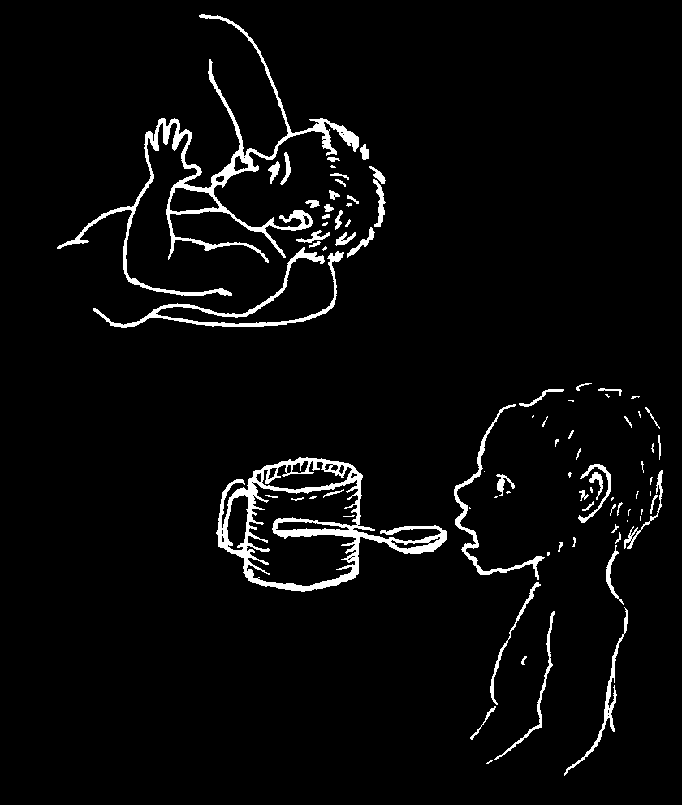

SUNKEN FONTANEL OR SOFT SPOT
The fontanel is the soft spot on the top of a newborn baby’s head. It is where the bones of his skull have not formed completely. Normally it takes a year to a year and a half for the soft spot to close completely.
Mothers in different lands realize that when the soft spot sinks inward their babies are in danger. They have many beliefs to explain this. In Latin America mothers think the baby’s brains have slipped downward. They try to correct this by sucking on the soft spot, by pushing up on the roof of the mouth, or by holding the baby upside down and slapping his feet. This does not help because… A sunken soft spot is really caused by dehydration (see p. 151).
This means the child is losing more liquid than he is drinking. He is too dry—usually because he has diarrhea, or diarrhea with vomiting.
Treatment:
1. Give the child plenty of liquid: Rehydration Drink (see p. 152), breast milk, or boiled water.
2. If necessary, treat the causes of the diarrhea and vomiting (see p. 152 to
161). For most diarrheas, medicine is not needed, and may do more harm than good.
TO CURE A SUNKEN SOFT SPOT.
.
DO NOT
DO THIS
DO THIS
OR DO THIS
(MAGIC CURES
WILL NOT HELP
EITHER)
Note: If the soft spot is swollen or bulges upward, this may be a sign of meningitis.
Begin treatment at once (see p. 185), and get medical help.

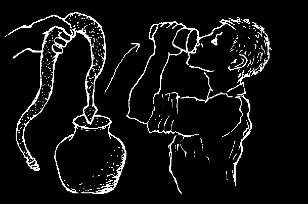
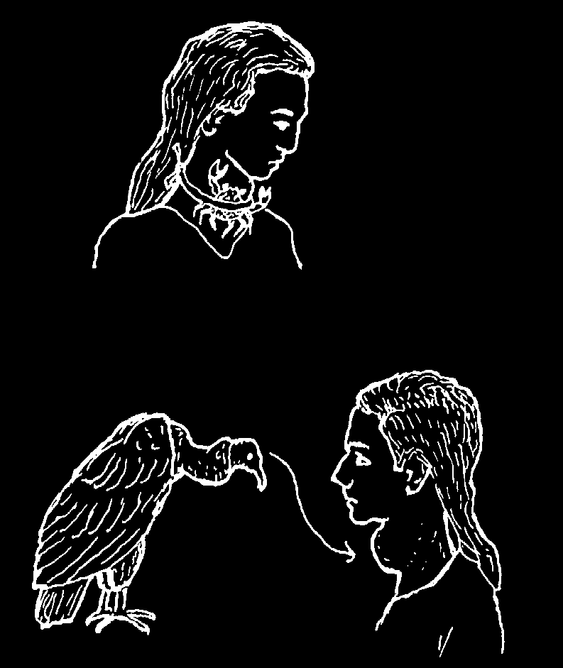
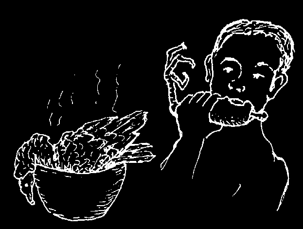
WAYS TO TELL WHETHER A HOME REMEDY WORKS OR NOT
Because a lot of people use a home cure does not necessarily mean it works well or is safe. It is often hard to know which remedies are helpful and which may be harmful.
Careful study is needed to be sure. Here are four rules to help tell which remedies are least likely to work, or are dangerous. (Examples are from Mexican villages.)
1. THE MORE REMEDIES THERE ARE FOR ANY ONE ILLNESS, THE LESS LIKELY
IT IS THAT ANY OF THEM WORKS.
For example: In rural Mexico there are many home remedies for goiter, none of which does any real good. Here are some of them:
1. to tie a crab
2. to rub the goiter with on the goiter the hand of a dead child
DON’T
DON’T
3. to smear the brains of a
4. to smear human vulture on the goiter feces on the goiter
DON’T
DON’T
Not one of these many remedies works. If it did, the others would not be needed.
When a sickness has just one popular cure, it is more likely to be a good one. For prevention and treatment of goiter use iodized salt (p. 130).
2. FOUL OR DISGUSTING REMEDIES ARE NOT LIKELY TO HELP —AND ARE
OFTEN HARMFUL.
For example:
1. the idea that leprosy can be cured
2. the idea that syphilis can by a drink made of rotting snakes be cured by eating a vulture
DON’T
DON’T
These two remedies do not help at all. The first one can cause dangerous infections.
Belief in remedies like these sometimes causes delay in getting proper medical care.


3. REMEDIES THAT USE ANIMAL OR HUMAN WASTE DO NO GOOD AND CAN
CAUSE DANGEROUS INFECTIONS. NEVER USE THEM.
Examples:
1. Putting human feces around the
2. Smearing cow dung on the head eye does not cure blurred vision to fight ringworm can cause tetanus and can cause infections.
and other dangerous infections.
DON’T!
DON’T!
Also, the droppings of rabbits or other animals do not help heal burns. To use them is very dangerous. Cow dung, held in the hand, cannot help control seizures.
Teas made from human, pig, or any other animal feces do not cure anything. They can make people sicker. Never put feces on the navel of a newborn baby. This can cause tetanus.
4. THE MORE A REMEDY RESEMBLES THE SICKNESS IT IS SAID TO CURE, THE
MORE LIKELY ITS BENEFITS COME ONLY FROM THE POWER OF BELIEF.
The association between each of the following illnesses and its remedy is clear in these examples from Mexico:
1. for a nosebleed, using yesca
2. for deafness, putting
3. for dog bite, drink tea made
(a bright red mushroom)
powdered rattlesnake’s from the dog’s tail rattle in the ear
4. for scorpion sting, tying
5. to prevent diarrhea when a child
6. to 'bring out’ the rash of a scorpion against the stung is teething, putting a necklace of measles, making tea from finger snake’s fangs around the baby’s kapok bark neck
These remedies, and many other similar ones, have no curative value in themselves. They may be of some benefit if people believe in them. But for serious problems, be sure their use does not delay more effective treatment.
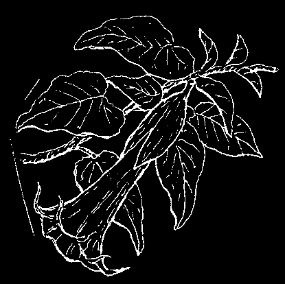

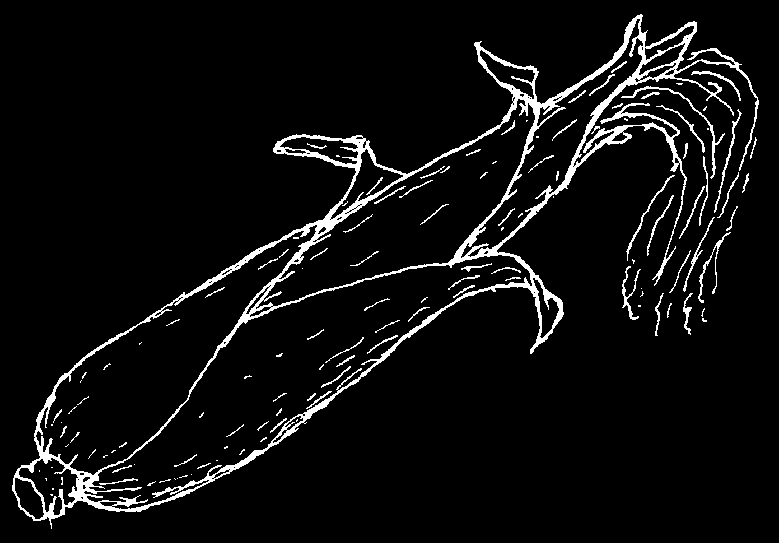

MEDICINAL PLANTS
Many plants have curative powers. Some of the best modern medicines are made from wild herbs.
Nevertheless, not all 'curative herbs’ people use have medical value... and those that have are sometimes used the wrong way. Try to learn about the herbs in your area and find out which ones are worthwhile.
CAUTION: Some medicinal herbs are very poisonous if taken in more than the recommended dose. For this reason it is often safer to use modern medicine, since the dosage is easier to control.
Here are a few examples of plants that can be useful if used correctly:
ANGEL’S TRUMPET (Brugmansia arborea)
The leaves of this and certain other members of the nightshade family contain a drug that helps to calm intestinal cramps, stomach-aches, and even gallbladder pain.
Grind up 1 or 2 leaves of Angel’s Trumpet and soak them for a day in 7 tablespoons (100 ml.) of water.
Dosage: Between 10 and 15 drops every 4 hours (adults only).
WARNING: Angel’s Trumpet is very poisonous if you take more than the recommended dose.
CORN SILK (the tassels or 'silk’ from an ear of maize)
A tea made from corn silk makes a person pass more urine. This can help reduce swelling of the feet—especially in pregnant women (see p. 176 and 248).
Boil a large handful of corn silk in water and drink 1 or 2 glasses. It is not dangerous.
GARLIC
A drink made from garlic may help get rid of pinworms.
Chop finely, or crush, 4 cloves of garlic and mix with 1 glass of liquid (water, juice, or milk).
Dosage: Drink 1 glass daily for 3 weeks.
To treat vaginal infections with garlic, see p. 241 and 242.

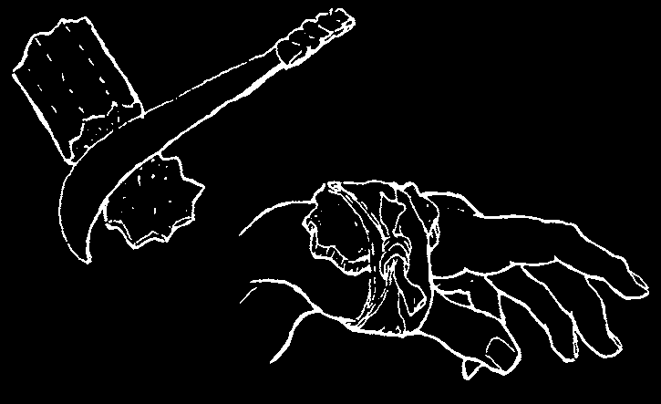


CARDON CACTUS (Pachycereus pecten-aboriginum)
Cactus juice can be used to clean wounds when there is no boiled water and no way to get any. Cardon cactus also helps stop a wound from bleeding, because the juice makes the cut blood vessels squeeze shut.
Cut a piece of the cactus with a clean knife and press it firmly against the wound.
When the bleeding is under control, tie a piece of the cactus to the wound with a strip of cloth.
After 2 or 3 hours, take off the cactus and clean the wound with boiled water and soap. There are more instructions on how to care for wounds and control bleeding on pages 82 to 87.
ALOE VERA (Sabila)
Aloe vera can be used to treat minor burns and wounds. The thick, slimy juice inside the plant calms pain and itching, aids healing, and helps prevent infection. Cut off a piece of the plant, peel back the outer layer, and apply the fleshy leaf or juice directly to the burn or wound.
Aloe can also help treat stomach ulcers and gastritis.
Chop the spongy leaves into small pieces, soak them in water overnight, and then drink one glass of the slimy, bitter liquid every 2 hours.
PAPAYA
Ripe papayas are rich in vitamins and also aid digestion.
Eating them is especially helpful for weak or old people who complain of upset stomach when they eat meat, chicken, or eggs. Papaya makes these foods easier to digest.
Papaya can also help get rid of intestinal worms, although modern medicines work better. Collect 3 or 4 teaspoons (15-20 ml.) of the 'milk’ that comes out when the green fruit or trunk of the tree is cut. Mix this with an equal amount of sugar or honey and stir it into a cup of hot water. If possible, drink along with a laxative.
Even better, dry and crush to a powder the papaya seeds. Take 3 teaspoons mixed with 1 glass water or some honey 3 times a day for 7 days.
Papayas can also be used for treating pressure sores. The fruit contains chemicals that help soften and make dead flesh easier to remove. First clean and wash out a pressure sore that has dead flesh in it. Then soak a sterile cloth or gauze with 'milk’ from the trunk or green fruit of a papaya plant and pack this into the sore,
Repeat cleaning and repacking 3 times a day.


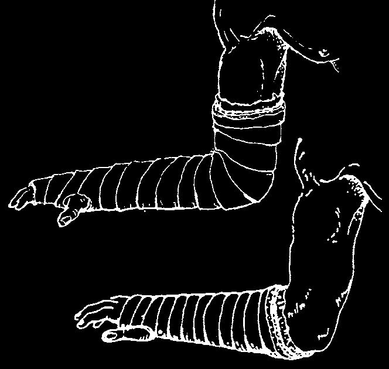
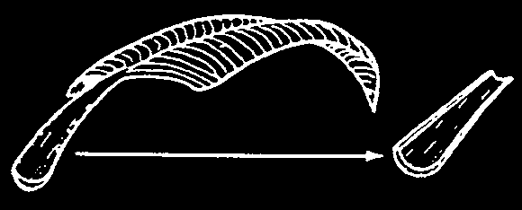
HOMEMADE CASTS— FOR KEEPING BROKEN BONES IN PLACE
In Mexico several different plants such as tepeguaje (a tree of the bean family) and solda con solda (a huge, tree-climbing arum lily) are used to make casts. However, any plant will do if a syrup can be made from it that will dry hard and firm and will not irritate the skin. In India, traditional bone-setters make casts using a mixture of egg whites and herbs instead of a syrup made from plant juices. But the method is similar. Try out different plants in your area.
For a cast using tepeguaje: Put 1 kilogram of the bark into 5 liters of water and boil until only 2 liters are left. Strain and boil until a thick syrup is formed. Dip strips of flannel or clean sheet in the syrup and carefully use as follows.
Make sure the bones are in a good position (p. 98).
Do not put the cast directly against the skin.
Wrap the arm or leg in a soft cloth.
Then follow with a layer of cotton or wild kapok.
Finally, put on the wet cloth strips so that they form a cast that is firm but not too tight.
Most doctors recommend that the cast cover the joint above and the joint below the break, to keep the broken bones from moving.
This would mean that, for a broken wrist, the cast should cover almost the whole arm, like this:
Leave the finger tips uncovered so that you can see if they keep a good color.
However, traditional bone-setters in China and Latin America use a short cast on a simple break of the arm saying that a little movement of the bone-ends speeds healing. Recent scientific studies have proven this to be true.
A temporary leg or arm splint can be made of cardboard, folded paper, or the thick curved stem of dried banana leaf, or palm leaf.
CAUTION: Even if the cast is not very tight when you put it on, the broken limb may swell up later. If the person complains that the cast is too tight, or if his fingers or toes become cold, white, or blue, take the cast off and put on a new, looser one.
Never put on a cast over a cut or a wound.

ENEMAS, LAXATIVES, AND PURGES: WHEN TO USE THEM AND WHEN NOT TO
Many people give enemas and take laxatives far too often. The 'urge to purge’ is worldwide.
Enemas and purges are very popular home cures. And they are often very harmful. Many people believe fever and diarrhea can be 'washed out’ by giving an enema (running water into the gut through the anus) or by using a purge, or strong laxative. Unfortunately, such efforts to clean or purge the sick body often cause more injury to the already damaged gut.
Rarely do enemas or laxatives do any good at all.
Often they are dangerous—especially strong laxatives.
CASES IN WHICH IT IS DANGEROUS TO USE ENEMAS OR LAXATIVES
Never use an enema or laxative if a person has a severe stomach-ache or any other sign of appendicitis or 'acute abdomen’ (see p. 93), even if he passes days without a bowel movement.
Never give an enema or laxative to a person with a bullet wound or other injury to the gut.
Never give a strong laxative to a weak or sick person. It will weaken him more.
Never give an enema or purge to a baby less than 2 years old.
Never give a laxative or purge to a child with high fever, vomiting, diarrhea or signs of dehydration (see p. 151). It can increase dehydration and kill the child.
Do not make a habit of using laxatives often (see Constipation, p. 126).
THE CORRECT USES OF ENEMAS
1. Simple enemas can help relieve constipation (dry, hard, difficult stools).
Use warm water only.
2. When a person with severe vomiting is dehydrated, you can try replacing water by giving an enema of Rehydration Drink very slowly (see p. 152).
PURGES AND LAXATIVES THAT ARE OFTEN USED
CASTOR OIL
These are irritating purges that often do
SENNA LEAF
more harm than good. It is better not to use them.
CASCARA (cascara sagrada)
MAGNESIUM HYDROXIDE
These are salt purges. Use them only in
MILK OF MAGNESIA
low doses, as laxative for constipation.
EPSOM SALTS (magnesium sulfate)
Do not use them often and never when there is pain in the belly.
(see p. 382)
MINERAL OIL
This is sometimes used for constipation in
(see p. 382)
persons with piles...but it is like passing greased rocks. Not recommended.
CORRECT USES OF LAXATIVES
Laxatives are like purges but weaker. All the products listed above are laxatives when taken in small doses and purges when taken in large doses. Laxatives soften and hurry the bowel movement; purges cause diarrhea. Purges are always harmful, but laxatives can sometimes be used to relieve constipation.
Laxatives: One can use milk of magnesia or other magnesium salts in small doses, as laxatives, in some cases of constipation. People with hemorrhoids (piles, p. 175)
who have constipation can take mineral oil but this only makes their stools slippery, not soft. The dose for mineral oil is 3 to 6 teaspoons at bedtime (never with a meal because the oil will rob the body of important vitamins in the food). This is not the best way.
Suppositories, or bullet-shaped pills that can be pushed up the rectum, can also be used to relieve constipation or piles (see pages 175, 382, and 391).
A BETTER WAY
Foods with fiber. The healthiest and most gentle way to have softer, more frequent stools is to drink a lot of water and to eat more foods with lots of natural fiber, or
'roughage’ like cassava, yam, or bran (wheat husks) and other whole grain cereals
(see p. 126). Eating plenty of fruits and vegetables also helps.
People who traditionally eat lots of food with natural fiber suffer much less from piles, constipation, and cancer of the gut than do people who eat a lot of refined 'modern’
foods. For better bowel habits, avoid refined foods and eat foods prepared from unpolished or unrefined grains.
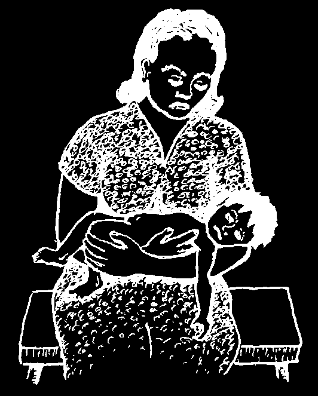

CHAPTER
Sicknesses that
Are Often Confused
WHAT CAUSES SICKNESS?
Persons from different countries or backgrounds have different ways to explain what causes sickness.
A baby gets diarrhea. But why?
People in small villages may say it is because the parents did something wrong, or perhaps because they made a god or spirit angry.
A doctor may say it is because the child has an infection.
A public health officer may say it is because the villagers do not have a good water system or use latrines.
A social reformer may say the unhealthy conditions that lead to frequent childhood diarrhea are caused by an unfair distribution of land and wealth.
A teacher may place the blame on lack of education.
People see the cause of sickness in terms of their own experience and point of view. Who then is right about the cause? Possibly everyone is right, or partly right.
This is because…
Sickness usually results from a combination of causes.
Each of the causes suggested above may be a part of the reason why a baby gets diarrhea.
To prevent and treat sickness successfully, it helps to have as full an understanding as possible about the common sicknesses in your area and the combination of things that causes them.
In this book, different sicknesses are discussed mostly according to the systems and terms of modern or scientific medicine.
To make good use of this book, and safe use of the medicines it recommends, you will need some understanding of sicknesses and their causes according to medical science. Reading this chapter
“Why my child?”
may help.
DIFFERENT KINDS OF SICKNESSES AND THEIR CAUSES
When considering how to prevent or treat different sicknesses, it helps to think of them in two groups: infectious and non-infectious.
Infectious diseases are those that spread from one person to another. Healthy persons must be protected from people with these sicknesses.
Non-Infectious diseases do not spread from person to person. They have other causes. Therefore, it is important to know which sicknesses are infectious and which are not.
Non-infectious Diseases
Non-infectious diseases have many different causes. But they are never caused by germs, bacteria, or other living organisms that attack the body. They never spread from one person to another. It is important to realize that antibiotics, or medicines that fight germs (see p. 55), do not help cure non-infectious diseases.
remember: Antibiotics are of no use for non-infectious diseases.
EXAMPLES OF NON-INFECTIOUS DISEASES
Problems caused by something
Problems caused by something
Problems caused by a lack of that wears out or goes wrong from outside that harms or something the body needs:
within the body:
troubles the body:
malnutrition rheumatism allergies anemia heart attack asthma pellagra epileptic seizures poisons night blindness and stroke snakebite xerophthalmia migraine headaches cough from smoking goiter and cretinism cataract stomach ulcer cirrhosis of the liver cancer alcoholism
(part of the cause)
Problems people are born with:
Problems that begin in the mind
(mental illnesses):
harelip fear that something is harmful when it is not epilepsy (some kinds)
crossed or wall-eyes
(paranoia)
mental slowness
(squint)
nervous worry (anxiety)
birthmarks other deformities belief in hexes (witchcraft)
uncontrolled fear (hysteria)
Infectious Diseases
Infectious diseases are caused by bacteria and other organisms (living things) that harm the body. They are spread in many ways. Here are some of the most important kinds of organisms that cause infections and examples of sicknesses they cause:

EXAMPLES OF INFECTIOUS DISEASES
Organism that causes
Name of the sickness
How it is spread or
Principal medicine the sickness enters the body tuberculosis through the air
(coughing)
tetanus dirty wounds some diarrhea dirty fingers, water, flies bacteria pneumonia through the air different
}
(microbes or germs)
(some kinds)
(coughing)
antibiotics for different gonorrhea, sexual contact bacterial chlamydia, and infections syphillis earache with a cold infected wounds contact with dirty things sores with pus direct contact (by touch)
colds, flu, measles, from someone who is acetaminophen and mumps, chickenpox, sick, through the other painkillers infantile paralysis, air, by coughing.
(Medicines like virus diarrhea flies, etc.
antibiotics do not fight viruses effectively)
virus rabies animal bites
Vaccinations prevent
(germs smaller some virus infections.
than bacteria)
warts touch
HIV body fluids of someone Antiretroviral infected get inside medicines fight HIV.
another person´s body ringworm by touch or from sulfur and vinegar fungus athlete’s foot clothing ointments: undecylenic, jock itch benzoic, salicylic acid griseofulvin
In the gut:
internal parasites worms feces-to-mouth different specific
(harmful animals amebas (dysentery)
lack of cleanliness medicines living in the body)
In the blood:
a combination of malaria mosquito bite malaria medicines lice external parasites fleas by contact with permethrin,
(harmful animals bedbugs infected persons keeping very clean living on the body)
scabies or their clothes
Bacteria, like many of the organisms that cause infections, are so small you cannot see them without a microscope—an instrument that makes tiny things look bigger. Viruses are even smaller than bacteria.
Antibiotics (penicillin, tetracycline, etc.) are medicines that help cure certain illnesses caused by bacteria. Antibiotics have no effect on illnesses caused by most viruses, such as colds, flu, mumps, chickenpox, etc. Do not treat virus infections with antibiotics. They will not help and may be harmful (see antibiotics, p. 55).
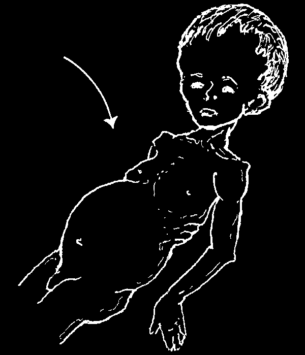

SICKNESSES THAT ARE HARD TO TELL APART
Sometimes diseases that have different causes and require different treatment result in problems that look very much alike. For example:
1. A child who slowly becomes thin and wasted, while his belly gets more and more swollen, could have any (or several) of the following problems:
• malnutrition (see p. 112)
• a lot of roundworms, p. 140, (usually together with malnutrition)
• advanced tuberculosis (p. 179)
• a long-term severe urinary infection (p. 234)
• any of several problems of the liver or spleen
• leukemia (cancer of the blood)
2. An older person with a big, open, slowly growing sore on the ankle could have:
• bad circulation that results from varicose veins or other causes (p. 213)
• diabetes (p. 127)
• infection of the bone (osteomyelitis)
• leprosy (p. 191)
• tuberculosis of the skin (p. 212)
• advanced syphilis (p. 237)
The medical treatment for each of these diseases is different, so to treat them correctly it is important to tell them apart.
Many illnesses at first seem very similar. But if you ask the right questions and know what to look for, you can often learn information and see certain signs that will help tell you what illness a person has.
This book describes the typical history and signs for many illnesses. But be careful!
Diseases do not always show the signs described for them—or the signs may be confusing. For difficult cases, the help of a skilled health worker or doctor is often needed. Sometimes special tests or analyses are necessary.
Work within your limits!
In using this book, remember it is easy to make mistakes.
Never pretend you know something you do not.
If you are not fairly sure what an illness is and how to treat it, or if the illness is very serious—get medical help.
SICKNESSES THAT ARE OFTEN CONFUSED OR GIVEN THE SAME NAME
Many of the common names people use for their sicknesses were first used long before anyone knew about germs or bacteria or the medicines that fight them.
Different diseases that caused more or less similar problems-such as 'high fever’ or
'pain in the side’—were often given a single name. In many parts of the world, these common names are still used. City-trained doctors often neither know nor use these names. For this reason, people sometimes think they apply to 'sicknesses doctors do not treat’. So they treat these home sicknesses with herbs or home remedies.
Actually, most of these home sicknesses or 'folk diseases’ are the same ones known to medical science. Only the names are different.
For many sicknesses, home remedies work well. But for some sicknesses, treatment with modern medicine works much better and may be life-saving. This is especially true for dangerous infections like pneumonia, typhoid, tuberculosis, or infections after giving birth.
To know which sicknesses definitely require modern medicines and to decide what medicine to use, it is important that you try to find out what the disease is in the terms used by trained health workers and in this book.
If you cannot find the sickness you are looking for in this book, look for it under a different name or in the chapter that covers the same sort of problem.
Use the list of CONTENTS and the INDEX.
If you are unsure what the sickness is—especially if it seems serious—try to get medical help.
The rest of this chapter gives examples of common or traditional names people use for various sicknesses. Often a single name is given to diseases that are different according to medical science.
Examples cannot be given for each country or area where this book may be used. Therefore, I have kept those from the Spanish edition, with names used by villagers in western Mexico. They will not be the same names you use. However, people in many parts of the world see and speak of their illnesses in a similar way.
So the examples may help you think about how people name diseases in your area.
Can you think of a name your people use for the following 'folk diseases’? If you can, write it in after the Spanish name, where it says,
Name in Your Area:

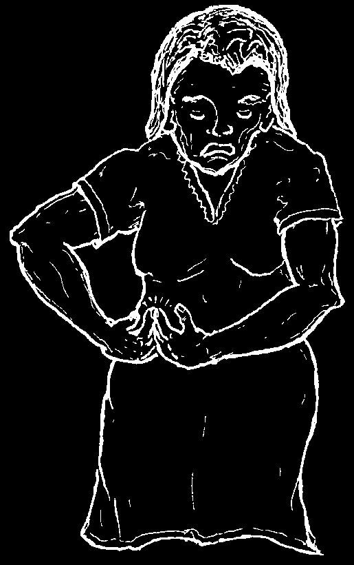
EXAMPLES OF LOCAL NAMES FOR SICKNESSES
Spanish Name: EMPACHO (STOPPED-UP GUT) Name in Your Area:
In medical terms empacho
(impaction) means that the gut is stopped up or obstructed (see p. 94). But in Mexican villages any illness causing stomach-ache or diarrhea may be called empacho. It is said that a ball of hair or something else blocks a part of the gut.
People put the blame on witches or evil spirits, and treat with magic cures and cupping (see picture). Sometimes folk healers pretend to take a ball of hair and thorns out of the gut by sucking on the belly.
Different illnesses that cause stomach pain or discomfort and are sometimes called empacho are:
• diarrhea or dysentery with cramps (p. 153)
• worms (p. 140)
• swollen stomach due to malnutrition (p. 112)
• indigestion or stomach ulcer (p. 128)
• and rarely, true gut obstruction or appendicitis (p. 94)
Most of these problems are not helped much by magic cures or cupping. To treat empacho, try to identify and treat the sickness that causes it.
Spanish Name: DOLOR DE IJAR (SIDE PAINS) Name in Your Area:
This name is used for any pain women get in one side of their belly. Often the pain goes around to the mid or lower back. Possible causes of this kind of pain include:
• an infection of the urinary system (the kidneys, the bladder, or the tubes that join them, see p. 234)
• cramps or gas pains (see diarrhea, p. 153)
• menstrual pains (see p. 245)
• appendicitis (see p. 94)
• an infection, cyst, or tumor in the womb or ovaries (p. 243) or an out-of-place pregnancy (see p. 280)

Spanish Name: LA CONGESTIÓN (CONGESTION) Name in Your Area:
Any sudden upset or illness that causes great distress is called la congestión by
Mexican villagers. People speak of congestión of:
the head, the chest, the stomach, or the whole body.
It is said that la congestión strikes persons who break 'the diet’ (see p. 123), by eating foods that are forbidden or taboo after childbirth, while taking a medicine, or when they have a cold or cough. Although these foods usually cause no harm and are sometimes just what their bodies need, many people will not touch them because they are so afraid of getting la congestión.
Different illnesses that are sometimes called la congestión are:
• Food poisoning, from eating spoiled food: causes sudden vomiting followed by diarrhea, cramps, and weakness (see p. 135).
• A severe allergic reaction, in allergic persons after they eat certain foods
(shellfish, chocolate, etc,), take certain medicines, or are injected with penicillin. May cause vomiting, diarrhea, cold sweat, breathing trouble, itchy rash, and severe distress (see p. 166).
• Any sudden upset of the stomach or gut: see diarrhea (p. 153), vomiting
(p. 161), and acute abdomen (p. 93).
• Sudden or severe difficulty breathing: caused by asthma (p. 167), pneumonia
(p. 171), or something stuck in the throat (p. 79).
• Illnesses that cause seizures (fits) or paralysis: see seizures (p. 178), tetanus
(p. 182), meningitis (p. 185), polio (p. 314), and stroke (p. 327).
• Heart attacks: mostly in older persons (p. 325).
Spanish Name: LATIDO (PULSING) Name in Your Area:
Latido is a name used in Latin America for a pulsing or 'jumping’ in the pit of the stomach. It is really the pulse of the aorta or big blood vessel coming from the heart.
This pulse can be seen and felt on a person who is very thin and hungry. Latido is often a sign of malnutrition (p. 112)—or hunger! Eating enough good food is the only real treatment (see p. 110 and 111).

Spanish Name: SUSTO (HYSTERIA, FRIGHT) Name in Your Area:
According to Mexican villagers, susto is caused by a sudden fright a person has had, or by witchcraft, black magic, or evil spirits. A person with susto is very nervous and afraid. He may shake, behave strangely, not be able to sleep, lose weight, or even die.
Possible medical explanations for susto:
1. In many people, susto is a state of fear or hysteria, perhaps caused by the
'power of belief’ (see p. 4). For example, a woman who is afraid someone will hex her becomes nervous and does not eat or sleep well. She begins to grow weak and lose weight. She takes this as a sign she has been hexed, so she becomes still more nervous and frightened. Her susto gets worse and worse.
2. In babies or small children, susto is usually very different. Bad dreams may cause a child to cry out in his sleep or wake up frightened. High fevers from any illness can cause very strange speech and behavior (delirium). A child that often looks and acts worried may be malnourished (p. 112). Sometimes early signs of tetanus
(p. 182) or meningitis (p. 185) are also called susto.
Treatment:
When the susto is caused by a specific illness, treat the illness. Help the person understand its cause. Ask for medical advice, if needed.
When the susto is caused by fright, try to comfort the person and help him understand that his fear itself is the cause of his problem. Magic cures and home remedies sometimes help.
If the frightened person is breathing very hard and fast, his body may be getting too much air—which may be part of the problem:
EXTREME FRIGHT OR HYSTERIA WITH FAST HEAVY BREATHING
(HYPERVENTILATION)
Signs:
BEFORE
• person very frightened
• breathing fast and deep
• fast, pounding heartbeat
• numbness or tingling of face, hands, or feet
• muscle cramps
Treatment:
♦ Keep the person as quiet as possible.
♦ Have her put her face in a paper bag
AFTER
and breathe slowly. She should continue breathing the same air for 2 or 3 minutes.
This will usually calm her down.
♦ Explain to her that the problem is not dangerous and
she will soon be all right.

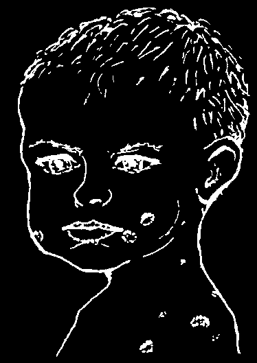
MISUNDERSTANDINGS DUE TO CONFUSION OF NAMES
This page shows 2 examples of misunderstandings that can result when certain names like 'cancer’ and 'leprosy’ mean one thing to medical workers and something else to villagers. In talking with health workers-and in using this book:
Avoid misunderstanding —go by the signs and history of a person’s sickness, not the name people give it!
Spanish Name: CÁNCER (CANCER) Name in Your Area:
Mexican villagers use the word cáncer for any severe infection of the skin, especially badly infected wounds (p. 88) or gangrene (p. 213).
In modern medical language, cancer is not an infection, but an abnormal growth or lump in any part of the body. Common types of cancer that you should watch out for are:
cancer of the skin breast cancer cancer of the womb or ovaries
(p. 211)
(p. 279)
(p. 280)
Any hard, painless, slowly growing lump in any part of your body may be cancer.
Cancer is often dangerous and may need surgery.
At the first suspicion of cancer seek medical help.
Spanish Name: LEPRA (LEPROSY) Name in Your Area:
Mexican villagers call any open spreading sore lepra.
This leads to confusion, because medical workers use this term only for true leprosy (Hansen’s disease, p. 191). Sores commonly called lepra are:
• impetigo and other skin infections (p. 202)
• sores that come from insect bites or scabies (p. 199)
• chronic sores or skin ulcers such as those caused by poor circulation (p. 213)
• skin cancer (p. 211)
• less commonly, leprosy (p. 191) or tuberculosis of the skin (p. 212)
This child has impetigo, not leprosy.
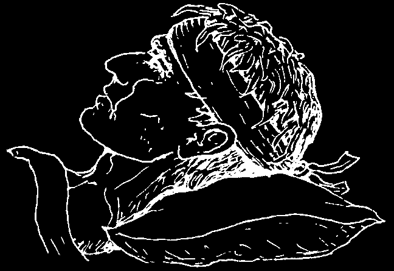